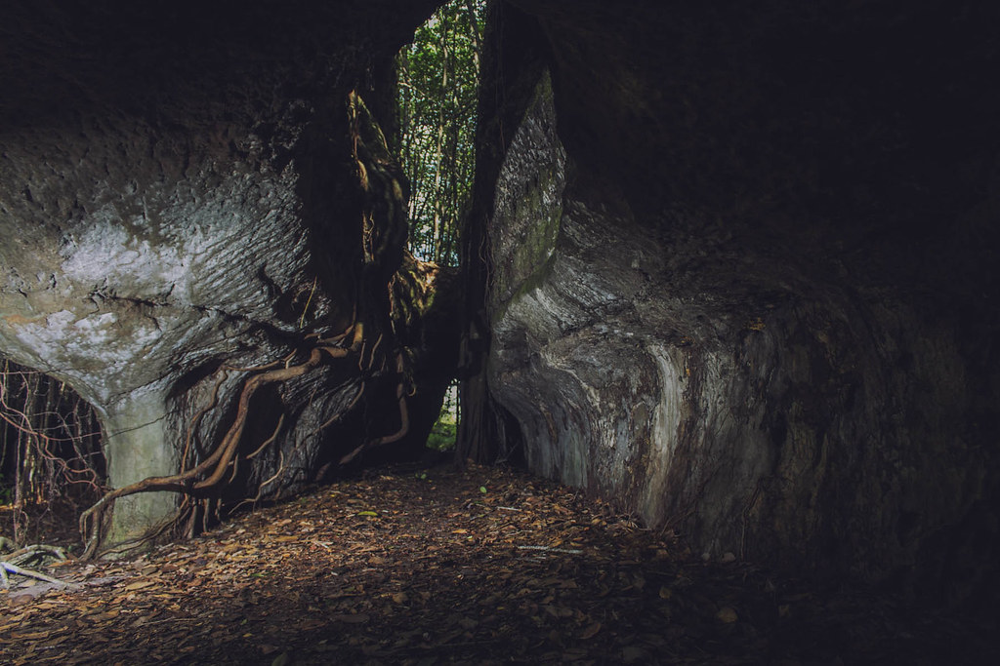
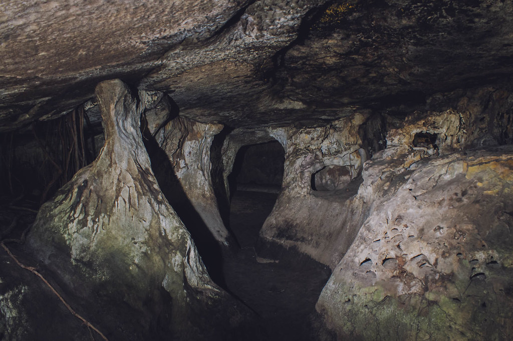

Inicio
Hoteles
Hotel Quinto nivel
Hotel puerta de orion
Hotel Tepuy
Hotel Las Palmas
Sitios Turisticos
Túneles Naturales
Pinturas Rupestres
Laguna Damas del Nare
Puerta de Orión
Pozos Naturales
Tranquilandia
Restaurantes
Túneles Naturales
Formaciones rocosas en posiciones que desafían la gravedad”, es el testimonio que se recoge después de visitar uno de los atractivos más atrayentes de la capital guaviarense. El visitante encontrará, además, cavernas enigmáticas, biodiversidad y, en general, un panorama que obliga el respeto, cuidado y admiración por la naturaleza.

